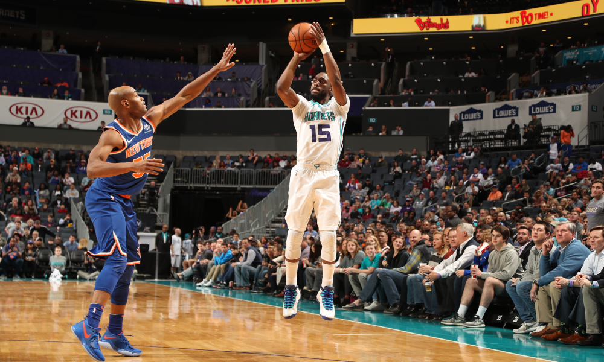
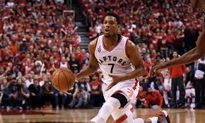
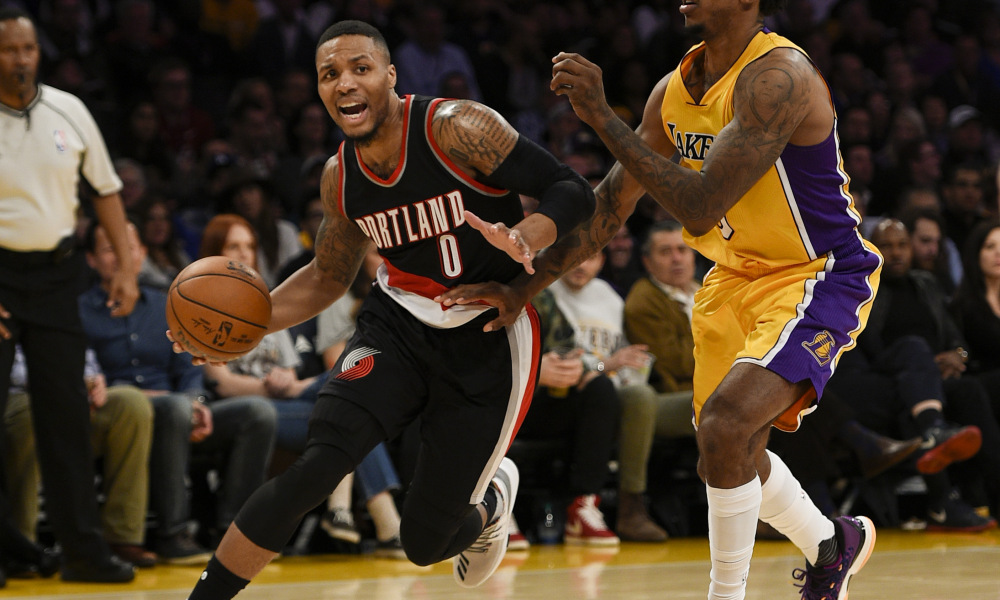

Game 1: Miami Heat at Charlotte Hornets
My Pick:
Charlotte Hornets
Why I'm Rolling with them:
Yesterday I made the mistake of trying to go too statistical for my prediction. It didn't work out. Tonight, it's back to my heart for predictions. I'm taking Charlotte in this game, I think Kemba is a better point guard than Dragic, and on top of that the Heat had a tough loss against the Kings last night. he game is in Charlotte, and I think that the Heat will feel the effect of the travel on their system, since this is their 3rd game in 4 days. Charlotte on the other hand has had 2 days off, and are coming off a tough loss to the Sixers. Miles Bridges has looked really good for Charlotte so far, I could see him being the difference Maker. Charlotte 112-104.
 Kemba Walker may just be the best Charlotte Hornet everGame 2: Atlanta Hawks at Cleveland Cavaliers
My Pick:
Atlanta Hawks
Why I'm Rolling with them:
Tyronn Lue has been fired, and Kevin Love is out for 4 weeks. JR Smith and Kyle Korver have been taken out of the rotation, and the younger Cavs will have a chance to shine. I'll be interested to see what changes are made for this Cavs team going forward, but they still are a very weak team. The Hawks are also not good, and are playing a back to back. But I think the dysfunction of this Cavs team, and their glaring lack of playmakers will be enough for Atlanta to steal the victory, 109-97.
Game 3: Sacramento Kings at Orlando Magic
My Pick:
Sacramento Kings
Why I'm Rolling with them:
De'Aaron Fox is a weapon. He's averaging 18/7 so far this season, and this is with him shooting only 23.5 percent from 3. Orlando's lack of a point guard will again hurt them, as this Sacramento team will punish teams who don't have a good point guard to defend Fox. I could see Fox putting up 24 points tonight on decent efficiency. Both teams have young bigs, with Bagley and Giles facing off against Bamba and Isaac. This could be a potential swing factor in this game, and unless Isaac has another good offensive game I'm giving the edge to the Kings, 120-112.
Game 4: Boston Celtics at Detroit Pistons
My Pick:
Boston Celtics
Why I'm Rolling with them:
Neither team has played since they played each other, and the only change is the location. Boston won by 20 in Detroit, and I don't see any reason why them coming home would hinder them. Their wings are still one of the few rotations who I'm confident can suppress Blake Griffin, and while I dont expect him to get 7 points again, I think they can hold him to 20. Not only that, I very much doubt Horford, Tatum, and Irving will combine for 13 again. That number should be more in the 33-43 range. Boston should take this one 117-109.
Game 5: Philadelphia 76ers at Toronto Raptors
My Pick:
Toronto Raptors
Why I'm Rolling with them:
Toronto suffered a tough loss against Milwaukee yesterday and picked up their first loss of the season. Good news is, OG Anunoby and Kawhi Leonard are back for tonight's game, which is in Toronto. More good news, Lowry shouldn't shoot as poorly as he did last night, as he was an uncharacteristic 0-9 from 3 last night. I see that picking up tonight, as having Kawhi to provide some different looks against this 76ers defense is exactly what he needs. Embiid should be a challenge for the Raptor's Centers, as JV and Ibaka have had trouble containing him in the past. He's been putting up 26 points and 12 rebounds a game, if he puts up a similar performance tonight the Raptors could be in trouble. Still, having Kawhi should be enough for the Raptors to win it 119-113.
 Kyle Lowry needs to have a bounce back game hereGame 6: Washington Wizards at Memphis Grizzlies
My Pick:
Memphis Grizzlies
Why I'm Rolling with them:
This is a tough one to call. The Grizzlies, 22-60 last year have rebounded and won 3 of their past 4 games, whereas the Wizards have lost 3 straight and are desperate for a win on this road trip. Conley and Gasol look to be more than Wall and Beal can handle, especially given the distance between the rest of their lineups. Jaren Jackson Jr. is currently putting up 13 points a game, a good start to his rookie season. I think against this Wizards team's lack of solid rebounding, he can have a good game. Grizzlies take it 103-97.
Game 7: Los Angeles Clippers at Oklahoma City Thunder
My Pick:
Los Angeles Clippers
Why I'm Rolling with them:
The Clippers have looked incredibly hot to start the year, and are coming off a 136-104 rocking of the Wizards, where they had 9(!) players finish in double digits. Count on that to be a theme this year as the Clippers are very balanced and should be able to take advantage of a starting guard like Ferguson in the 2 spot. The Thunder's offense has struggled to start the season, and their victory against the Suns was only the second time this season they've scored over 100 points. The other came against the Kings, another bottom tier defense. This Clippers team is very good defensively, and should be able to hold this OKC team to under 110 as they win 115-107.
Game 8: Portland Trail Blazers at Houston Rockets
My Pick:
Portland Trail Blazers
Why I'm Rolling with them:
Houston has looked very shaky so far this season, as they are off to a 1-4 start. James Harden is still out, and I'm not a big fan of the Rocket's playmaking. That said, Portland Played last night and has notoriously mediocre backcourt defense, if Paul and Gordon can light it up Houston can rack up a lot of points through them. However, Houston is starting Melo at the 3, and I'm still not sold on his ability to be a positive on either end of the floor against a starting lineup. I'm taking Portland in a close one, 117-114.
 Damian Lillard is averaging 34 points this season